리눅스마스터-1급 (2003-10-04 기출문제)
1과목: 리눅스 실무의 이해
1. 다음은 컴퓨터 시스템의 저장 장치들을 나열한 것이다. 속도가 빠른 것부터 순서대로 알맞게 나열된 것은?
- 레지스터 - 메인 메모리 - 광학 디스크 - 자기 테이프
- 메인 메모리 - 캐시 메모리 - 자기 디스크 - 자기 테이프
- 자기 디스크 - 자기 테이프 - 캐시 메모리 - 광학 디스크
- 메인 메모리 - 레지스터 - 자기 디스크 - 광학 디스크
(정답률: 60%)

2. 페이지의 교체 정책으로 쓰기에 적당하지 못한 페이징 방법은?
- FIFO (First In First Out)
- LRU (Least Recently Used)
- RR (Round Robin)
- LFU (Least Frequently Used)
(정답률: 73%)
3. 아래에서 다중 사용자용 운영체제로 볼 수 있는 것은 몇 가지인가?
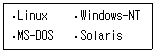
- 1개
- 2개
- 3개
- 4개
(정답률: 84%)
4. Linux 커널이 안정 버전인지, 개발 버전인지를 구분하는 것은?
- Major Number
- Minor Number
- Patch Number
- 구분할 수 없다.
(정답률: 48%)
5. 리눅스에 관한 설명으로 틀린 것은?
- 서버용으로만 개발되었다.
- 다중 프로세서를 지원한다.
- GPL을 따른다.
- 개방형 운영체제이다.
(정답률: 91%)
6. 주변장치 인터페이스로서 SCSI가 사용되는 이유로 보기 어려운 것은?
- PC 환경뿐만 아니라 유닉스나 매킨토시와도 호환이 가능하다.
- ATA, IDE 등의 인터페이스에 비해 월등한 다중 처리 성능을 보여준다.
- 안정성 있는 직렬인터페이스를 사용한다.
- 7개에서 15개까지 장치의 확장이 가능하다.
(정답률: 알수없음)
7. /etc 디렉토리 하위의 파일들에 대한 설명으로 틀린 것은?
- /etc/issue : 부팅 시의 출력 메시지가 기록 되어 있는 파일이다.
- /etc/group : 그룹에 관한 정보를 가지고 있는 파일이다.
- /etc/profile : 사용자의 기본 쉘 환경 설정을 위해 사용되는 파일이다.
- /etc/shadow : 계정에 대한 패스워드가 별도로 기록되어 있는 파일이다.
(정답률: 48%)
8. ext2 파일 시스템의 구성에 있어 기본이 되는 단위로 해당 파일에 관한 모든 정보를 가지고 있는 자료 구조를 무엇이라 하는가?
- super block
- inode
- descriptor
- bit map
(정답률: 59%)
9. Linux의 GUI와 관련하여 다음 중 성격이 다른 하나는 무엇인가?
- KDE
- Motif
- GNOME
- GNUStep
(정답률: 42%)
10. 다음 중 X-윈도우 시스템의 기본 구성 요소가 아닌 것은?
- X-server
- X-client
- X-protocol
- X-resource
(정답률: 63%)
11. 다음은 쉘 스크립트 arg를 이용한 명령의 실행 결과이다. ㉮와 ㉯에 들어갈 내용이 알맞게 짝지어진 것은?
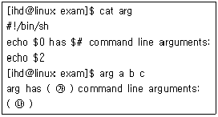
- ㉮ : 3, ㉯ : a
- ㉮ : 3, ㉯ : b
- ㉮ : 4, ㉯ : a
- ㉮ : 4, ㉯ : b
(정답률: 29%)
12. 텍스트 파일인 test1과 test2가 있다. test1 파일의 내용을 test2 파일의 앞쪽으로 붙여 넣기 위한 명령으로 알맞은 것은?
- $ cat test1 >> test2
- $ cat test1 << test2
- $ cat test1 > test3; cat test2 >> test3; cat test3 > test2
- $ cat test1 > test3; cat test1 >> test2; cat test2 > test3
(정답률: 34%)
13. 임의의 프로세스가 실행하고 있는 프로그램 코드나 이 프로그램이 사용하는 데이터, 스택을 비롯하여 해당 프로세스의 PCB 정보 및 실행 시의 각 레지스터 값 등을 통틀어 무엇이라 하는가?
- context
- offset
- interrupt
- swap
(정답률: 42%)
14. 준비상태의 프로세스 중에서 작업 완료 때까지 가장 적은 시간을 필요로 하는 프로세스에게 CPU를 할당해 주는 선점 방식의 스케줄링 방법은?
- RR (Round-Robin)
- SPN (Shortest Process Next)
- SRTN (Shortest Remaining Time Next)
- HRRN (High Response Ratio Next)
(정답률: 54%)
15. 다음은 어떤 상태의 프로세스에 대한 설명인가?
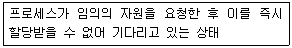
- 준비 상태(Ready)
- 대기 상태(Blocked)
- 실행 상태(Running)
- 지연 상태(Suspended)
(정답률: 47%)
16. OSI 7 Layer 중 네트워크 레이어에 대한 설명으로 맞는 것은?
- 종단 시스템 간 신뢰성 있는 데이터의 전송을 담당한다.
- 다양한 응용 프로그램간의 연결을 관리한다.
- 데이터가 목적지까지 올바르게 도달할 수 있도록 경로 선택 및 라우팅 기능을 수행한다.
- 데이터의 표현 방식, 상이한 부호 체계간의 변환에 대하여 규정한다.
(정답률: 82%)
17. 아래와 같은 내용을 담고 있는 네트워크 관련 파일은 무엇인가?
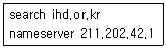
- /etc/hosts
- /etc/services
- /etc/resolv.conf
- /etc/sysconfig/network
(정답률: 54%)
18. 아래에서 설명하고 있는 네트워크 토폴로지는?
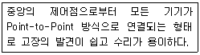
- 스타 토폴로지
- 링 토폴로지
- 버스 토폴로지
- 혼합 토폴로지
(정답률: 65%)
19. 아래의 매뉴얼이 설명하는 네트워크 명령어로 ( ) 안에 알맞은 것은?
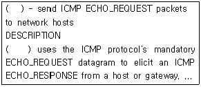
- traceroute
- ping
- netstat
- nslookup
(정답률: 54%)
20. 다음 중 명령어와 그에 대한 설명이 바르게 연결된 것은?
- dig : 도메인 네임 질의 패킷을 네임서버에 보낸다.
- ifconfig : IP 라우팅 테이블을 관리한다.
- route : 네트워크 인터페이스를 설정한다.
- netstat : ICMP 패킷을 해당 네트워크에 송신 한다.
(정답률: 62%)
2과목: 리눅스 시스템 관리
21. /etc/shadow 파일에 있는 사용자 정보가 아닌 것은?
- 로그인 이름
- 그룹 이름
- 로그인 계정의 유효 시한
- 패스워드를 변경해야만 하는 날까지 남은 날 수
(정답률: 44%)
22. /etc/group 파일의 내용에 대한 설명으로 틀린 것은?
- 그룹의 패스워드를 설정하지 않아도 된다.
- 한 사용자가 여러 그룹에 속할 수 있다.
- 각 그룹 ID는 유일한 값이어야 한다.
- 각 그룹의 권한을 설정할 수 있다.
(정답률: 23%)
23. useradd 명령어로 할 수 없는 것은?
- 로그인 이름 지정
- 주석(Comment) 지정
- 홈 디렉토리에 저장될 환경 파일이 있는 디렉토리 지정
- 그룹 추가
(정답률: 59%)
24. 다음 명령에 대한 설명으로 맞는 것은?
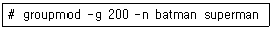
- ID가 200이고 이름이 batman인 그룹을 superman으로 변경한다.
- 그룹 superman을 이름이 batman이고, ID가 200인 그룹으로 변경한다.
- 그룹 batman을 이름이 superman이고, ID가 200인 그룹으로 변경한다.
- 이름이 superman이고 ID가 200인 그룹을 batman으로 변경한다.
(정답률: 20%)
25. 사용자 그룹 관리에 대한 설명으로 틀린 것은?
- 그룹을 추가하려면 groupadd 명령어에 그룹 ID와 그룹 이름을 주면 된다.
- 그룹을 삭제하려면 groupdel 명령어에 그룹 ID를 주면 된다.
- 그룹을 삭제할 때 그 그룹에 속해있는 사용자들의 그룹은 변경되지 않는다.
- 사용자가 속한 그룹을 확인하려면 groups 명령어에 사용자 이름을 주면 된다.
(정답률: 4%)
26. 다음 명령의 실행 결과에 대한 설명으로 틀린 것은?
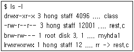
- class 파일은 디렉토리 파일이다.
- rest.c 파일은 하드 링크 수가 3이다.
- myhda1 파일은 블록 장치 파일이며, 메이저 번호가 3이다.
- rr 파일은 rest.c 파일에 대한 하드 링크 파일 이다.
(정답률: 47%)
27. 다음 명령의 실행결과를 보고 /bin/passwd 파일에 대한 설명으로 틀린 것을 고르시오.
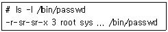
- 허가권은 chmod 6445를 하면 설정된다.
- 소유자는 root이다.
- 모든 사용자가 실행할 수 있다.
- 이 파일을 실행하면 사용자의 effective ID가 root의 ID로 변경된다.
(정답률: 24%)
28. 현재 디렉토리의 파일과 서브 디렉토리에 있는 모든 파일들의 이름을 출력하고자 할 때 사용할 수 있는 명령이 아닌 것은?
- ls -lR
- ls -lr
- find . -ls
- find . -print
(정답률: 28%)
29. 쿼타(Quota) 설정에 관한 설명으로 틀린 것은?
- 쿼타가 필요한 파티션은 /etc/fstab 파일에서 사용자 별로 또는 그룹 별로 쿼타를 설정한다.
- quota.user 파일은 쿼타가 설정될 파티션의 루트에 만들어야 하고, root 사용자만이 읽을 수 있어야 한다.
- 쿼타의 크기는 블록의 개수만을 이용하여 제한 할 수 있다.
- edquota 명령어를 사용하여 쿼타의 grace period를 설정할 수 있다.
(정답률: 27%)
30. mount 명령어를 사용하여 다음과 같은 조건으로 파일 시스템을 마운트하려고 한다. 이를 위한 명령으로 알맞은 것은?
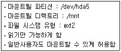
- mount -t ext2 -o ro,suid /mnt /dev/hda5
- mount -t ext2 -o ro,user /dev/hda5 /mnt
- mount -t ext2 -o ro,user /mnt /dev/hda5
- mount -r -t ext2 -o suid /dev/hda5 /mnt
(정답률: 53%)
31. 디폴트 실행 레벨(Run Level)이 설정되는 곳은?
- /etc/inittab 파일의 initdefault
- /etc/inittab 파일의 sysinit
- /etc/lilo.conf 파일의 prompt
- /etc/lilo.conf 파일의 default
(정답률: 알수없음)
32. NFS와 같은 네트워크 지원이 없는 다중 사용자 모드를 위한 실행 레벨은?
- 1
- 2
- 3
- 5
(정답률: 24%)
33. 프로세스의 우선순위를 조정하는 nice 명령어에 대한 설명으로 틀린 것은?
- 우선순위 조정수치를 19까지 증가시킬 수 있다.
- 우선순위 조정수치를 생략하면 기본적으로 10을 증가시킨다.
- 우선순위 조정수치가 클수록 우선권이 높아진다.
- 슈퍼 유저는 음의 조정수치를 부여할 수 있다.
(정답률: 67%)
34. 시그널과 관련된 설명으로 틀린 것은?
- kill 명령에서 시그널이 지정되지 않으면 KILL 시그널을 보낸다.
- kill 명령에서 -l 옵션은 시그널 이름 목록을 보여준다.
- killall 명령에서 -w 옵션은 시그널을 받은 프로세스들이 종료되기를 기다린다.
- nohup 명령은 hangup 시그널을 무시하게 해준다.
(정답률: 39%)
35. cron 프로그램을 사용하여 다음과 같은 작업을 수행하려고 한다. 이를 위한 crontab의 내용으로 알맞은 것은?
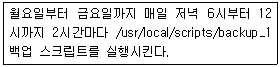
- 0 18-24/2 * * 1-5 /usr/local/scripts/backup_1
- 0 18-24,2 * * 1-5 /usr/local/scripts/backup_1
- * 2 18-24 * 0-4 /usr/local/scripts/backup_1
- 2 18-24 0-4 /usr/local/scripts/backup_1
(정답률: 48%)
36. rpm 명령어를 사용하여 sample.sh 파일이 속해 있는 패키지를 찾는 명령으로 알맞은 것은?
- rpm -qa | grep 'sample.sh'
- rpm -qi sample.sh
- rpm -qf sample.sh
- rpm -qp sample.sh
(정답률: 알수없음)
37. 아래 조건에 알맞게 foo-1.0-1.i386.rpm 패키지를 설치하기 위한 rpm 명령은?
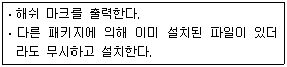
- rpm -ivh --replacepkgs foo-1.0-1.i386.rpm
- rpm -ivh --replacefiles foo-1.0-1.i386.rpm
- rpm -ivh --nodeps foo-1.0-1.i386.rpm
- rpm -ivh --oldpackage foo-1.0-1.i386.rpm
(정답률: 15%)
38. rpm 명령의 -V 옵션을 사용하여 패키지를 검증 하였을 때 출력되는 문자의 의미로 틀린 것은?
- S : 파일 크기
- T : 갱신일
- U : 사용자
- M : MD5 체크섬
(정답률: 27%)
39. 라이브러리 파일의 관리에 사용되는 ar 명령어의 옵션에 대한 설명으로 틀린 것은?
- -t : archive 내의 파일 목록을 출력
- -r : archive 내의 특정 파일을 제거
- -x : archive 내의 특정 파일을 빼냄
- -q : archive 내의 끝에 파일을 추가
(정답률: 14%)
40. 다음은 make 명령이 사용하는 Makefile의 구조 이다. 이에 대한 설명으로 틀린 것은?
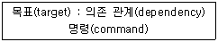
- 의존 관계에 여러 개의 파일을 명시할 때는 공백으로 구분한다.
- 명령이 명시된 줄은 탭(tab)으로 시작한다.
- make는 의존관계에 명시된 파일과 목표에 명시된 파일의 변경 시간을 이용하여 명령을 수행할지를 결정한다.
- Makefile에 여러 개의 목표를 명시할 수 있으며 명시된 모든 목표가 만들어진다.
(정답률: 8%)
41. 다음 중 커널 컴파일을 위한 커널 설정 명령이 아닌 것은?
- make install
- make config
- make xconfig
- make menuconfig
(정답률: 13%)
42. 커널컴파일 과정에서 커널설정이 끝난 후 커널 이미지를 생성하기 위한 4가지 방법으로 알맞은 것은?(단, grub의 방법까지 포함한다.)
- make zImage, make zdisk, make zlilo, make zgrub
- make zImage, make mrproper, make zlilo, make zgrub
- make zImage, make zdisk, make mrproper, make zgrub
- make zImage, make zdisk, make zlilo, make mrproper
(정답률: 19%)
43. 커널 컴파일 과정 중 아래에서 설명하는 명령이 순서대로 바르게 나열된 것은?
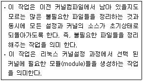
- make mrproper, make mkmodules
- make proper, make modules
- make mrproper, make modules
- make proper, make mkmodules
(정답률: 75%)
44. 매직키란 Kernel에게 직접 내릴 수 있는 명령어 단축키이다. 다음 중 시스템이 다운되었을 때나 응급복구 과정에서 사용할 수 있는 매직키에 대한 설명으로 틀린 것은?
- 매직키의 사용을 위해서는 리눅스 설치 시에 매직키관련 설정을 선택하여 설치하거나 또는 커널컴파일의 Kernel hacking 단계에서 Magic SysRq Key 사용을 선택한 후 컴파일하여야 한다.
- ALT + SysRq + S 는 Alt키와 SysRq키, S키를 동시에 누르는 것을 의미하며 SYNC 작업을 수행한다.
- ALT + SysRq + U 는 Alt키와 SysRq키, U키를 동시에 누르는 것을 의미하며 mount 작업을 수행한다.
- ALT + SysRq + B 는 Alt키와 SysRq키, B키를 동시에 누르는 것을 의미하며 reboot을 수행한다.
(정답률: 25%)
45. 아래에 설명된 리눅스 커널 모듈(Module) 관련 명령어가 순서대로 알맞게 나열된 것은?
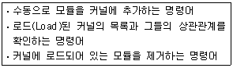
- addmod, lsmod, delmod
- insmod, listmod, rmmod
- addmod, listmod, delmod
- insmod, lsmod, rmmod
(정답률: 72%)
46. 프린터 관련 명령어와 이에 대한 설명이 잘못 짝지어진 것은?
- lps : 프린터의 상태를 출력한다.
- lprm : 프린터의 스풀링 대기열에 있는 지정된 문서를 삭제한다.
- lpq : 현재 프린트작업 상태를 출력한다.
- lpr : 지정된 파일을 프린터로 출력한다.
(정답률: 42%)
47. 사용중인 리눅스 시스템에 새로 장착한 디스크(/dev/sdb)를 사용하기 위한 아래와 같은 작업이 순서대로 바르게 나열된 것은?(단, 디스크 전체를 하나의 파티션으로 구성한다.)
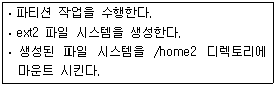
- # fdisk /dev/sdb
# mkefs /dev/sdb1
# mount -t ext2 /dev/sdb1 /home2 - # fdisk /dev/sdb
# mke2fs /dev/sdb1
# mount -t ext2 /dev/sdb1 /home2 - # fdisk /dev/sdb
# mke2fs /dev/sdb1
# mount -m ext2 /dev/sdb1 /home2 - # fdisk /dev/sdb
# mkefs /dev/sdb1
# mount -m ext2 /dev/sdb1 /home2
(정답률: 48%)
48. 디스크의 파티션 설정에 사용하는 fdisk 명령어에 대한 설명으로 틀린 것은?
- /dev/sdc 장치를 파티션하기 위해서는 fdisk /dev/sdc 명령을 수행한다.
- fdisk 명령어 중 n 은 새로운 파티션을 생성하고자 할 때 사용한다.
- fdisk 명령어 중 p 는 파티션 설정 도움말을 보여준다.
- fdisk 명령어 중 w 는 변경한 파티션정보를 저장하고 fdisk 모드에서 빠져 나온다.
(정답률: 71%)
49. 리눅스시스템 관리자인 홍길동은 리눅스에 모뎀을 설정하기 위해 현재 사용중인 IRQ를 점검하고자 한다. 이를 위한 명령으로 가장 알맞은 것은?
- cat /proc/interrupts
- cat /proc/irq
- /sbin/interrupts
- /sbin/irq
(정답률: 15%)
50. mke2fs 명령을 사용하여 /dev/sdb1 파티션에 ext3 파일시스템을 생성하기 위한 명령으로 맞는 것은?
- mke2fs -i /dev/sdb1
- mke2fs -j /dev/sdb1
- mke2fs -k /dev/sdb1
- mke2fs -n /dev/sdb1
(정답률: 알수없음)
51. 리눅스의 기본적인 로그시스템에 대한 설명으로 틀린 것은?
- 기본적인 정책설정 파일은 /etc/syslog.conf 이다.
- 로그가 저장되는 기본위치는 /var/log/ 디렉토리 이며, messages, secure, maillog 등의 로그파일이 존재한다.
- /etc/rc.d/init.d/syslog 스크립트에 의해 로그 데몬이 실행(start), 중지(stop), 재시작(restart)될 수 있다.
- 기본적으로 설정되어 있는 로그파일의 이름과 저장위치는 변경될 수 없다.
(정답률: 58%)
52. 10대의 리눅스 서버를 관리하는 홍길동은 재난시 원인분석을 위하여 해당 서버들의 로그가 실시간으로 저장되는 로그서버를 구축하려고 한다. 이를 위해 로그 서버에서 실행시켜야하는 syslogd 명령으로 알맞은 것은?(단, 저장대상 로그들은 syslog.conf 파일에 정의된 로그를 대상으로 하며, 대상서버들은 원격 로그 저장을 위한 사전설정이 모두 되어있다.)
- /sbin/syslogd -p -m 0
- /sbin/syslogd -q -m 0
- /sbin/syslogd -r -m 0
- /sbin/syslogd -s -m 0
(정답률: 29%)
53. 다음은 /etc/logrotate.d/에 위치한 파일들 중 syslog 파일의 내용이다. 이에 대한 설명으로 틀린 것은?
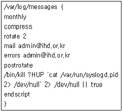
- 이 로그파일은 한 달에 한번씩 순환(rotate)되며, 압축되어 저장된다.
- 순환되는 파일의 개수는 2개이며, 두 달간의 로그파일을 보관한다.
- 순환되어 저장되는 로그파일이 지정된 개수를 넘게되거나 logrotate 작업 시 에러가 발생하게 되면 각각 지정된 메일주소로 메일발송을 하게 된다.
- postrotate ~ endscript 내에 있는 설정은 logrotate 작업 전에 실행이 될 내용이다.
(정답률: 34%)
54. 시스템관리자 홍길동은 사용 중인 리눅스 시스템에 새로 장착한 SCSI장비가 부팅 시에 커널에 의해 인식되었는지를 확인하려고 한다. 이를 위한 명령어로 가장 알맞은 것은?
- dmesg | grep SCSI
- boot | grep SCSI
- last | grep SCSI
- lastlog | grep SCSI
(정답률: 34%)
55. 다음의 시스템보안을 위한 점검방법이 순서대로 알맞게 나열된 것은?
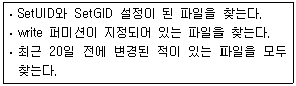
- # find / -type f \( -perm -004000 -o -perm -002000 \) -exec ls -lg {} \;
# find / -type f \( -perm -2 -o -perm -20 \) -exec ls -lg {} \;
# find / -ctime -20 -type f -exec ls -l {} \; - # find / -type f \( -perm -002000 -o -perm -001000 \) -exec ls -lg {} \;
# find / -type f \( -perm -2 -o -perm -20 \) -exec ls -lg {} \;
# find / -ntime -20 -type f -exec ls -l {} \; - # find / -type f \( -perm -004000 -o -perm -002000 \) -exec ls -lg {} \;
# find / -type f \( -perm -1 -o -perm -10 \) -exec ls -lg {} \;
# find / -ctime -20 -type f -exec ls -l {} \; - # find / -type f \( -perm -004000 -o -perm -002000 \) -exec ls -lg {} \;
# find / -type f \( -perm -2 -o -perm -20 \) -exec ls -lg {} \;
# find / -ntime -20 -type f -exec ls -l {} \;
(정답률: 20%)
56. 아래 설명에 알맞은 tripwire 명령이 순서대로 알맞게 나열된 것은?
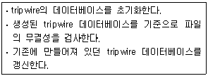
- tripwire --init, tripwire --check, tripwire --update
- tripwire --dbinit, tripwire --check, tripwire --dbupdate
- tripwire --init, tripwire --check, tripwire --dbupdate
- tripwire --dbinit, tripwire --check, tripwire --update
(정답률: 25%)
57. 시스템보안점검 프로그램인 COPS에 대한 설명으로 틀린 것은?
- 파일, 디렉토리 및 장치파일에 대한 퍼미션 점검 등을 수행한다.
- 대표적으로 /etc/passwd, /etc/group, .rhosts, /etc/hosts.quiv 등의 파일을 점검한다.
- root만이 실행할 수 있으며 보안문제 점검 후에 자동으로 취약한 부분은 모두 수정한다.
- ./cops -d -m root 명령으로 실행하면 root에게 결과메일을 보내준다.
(정답률: 55%)
58. 다음은 tar 명령을 이용하여 /home/temp를 제외한 /home 디렉토리를 gzip 형태로 압축한 뒤 /backup 디렉토리에 백업하기 위한 명령이다. ㉮와 ㉯에 알맞은 것은?
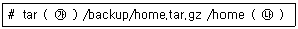
- ㉮ : tvfz, ㉯ : --exclude=/home/temp
- ㉮ : tvfz, ㉯ : --include=/home/temp
- ㉮ : cvfz, ㉯ : --exclude=/home/temp
- ㉮ : cvfz, ㉯ : --include=/home/temp
(정답률: 알수없음)
59. 리눅스의 백업명령어인 cpio에 대한 설명으로 틀린 것은?
- 파일을 테이프드라이브에 저장하기 위한 프로그램이다.
- 파일시스템 전체와 디렉토리를 대상으로 하는 리눅스의 대표적인 백업방법으로 tar와 dump 보다 범용적으로 사용되고있는 전통적인 백업 방법이다.
- 네트워크를 통한 백업을 지원하지 않지만 파이프라인과 rsh로 원격테이프 드라이브로 자료를 전송할 수 있다.
- 바이트-스와핑이 가능하고 다른 아카이브 형태로 기록할 수 있으며, 파이프를 통해 다른 프로그램으로 데이터를 넘겨줄 수도 있다.
(정답률: 20%)
60. 백업 테이프를 활용한 적절한 백업 요령이라고 보기 어려운 것은?
- 백업 대상에 따라 다른 백업 전략을 취한다.
- 백업을 한 후에는 쓰기 방지 조치를 한다.
- 중요한 자료는 암호화를 하여 백업한다.
- 가능하면 하나의 백업대상에는 하나의 백업 테이프를 할당하여 계속적으로 사용한다.
(정답률: 67%)
3과목: 네트워크 및 서비스의 활용
61. 아파치 웹 서버의 시작 유형에 대한 설명으로 틀린 것은?
- Standalone과 Inetd 방식이 있다.
- Standalone 방식은 아파치 데몬을 단독으로 실행하는 방식이다.
- Inetd 방식은 클라이언트가 요청할 때만 inetd 라는 슈퍼데몬에 의해 아파치 데몬이 실행되는 방식이다.
- 클라이언트의 요구에 신속한 반응을 필요로 할 때는 Inetd 유형을 선택한다.
(정답률: 40%)
62. 아파치 설정파일에서 LogLevel은 error_log파일에 기록되는 메시지 범위를 결정한다. 이러한 LogLevel의 설정 중 기록 가능한 메시지 종류가 아닌 것은?
- debug
- info
- care
- crit
(정답률: 38%)
63. MySQL에 대한 설명으로 틀린 것은?
- 공개된 관계형 데이터베이스이다.
- 객체지향 개념을 지원한다.
- 일반적인 리눅스 배포판에서 기본적으로 지원 한다.
- 리눅스 환경에서 Apache, PHP와 함께 웹 서버 구축을 위해 많이 사용된다.
(정답률: 34%)
64. 다음 그림은 아파치 웹 서버를 구동시킨 직후 프로세스 정보를 체크한 결과이다. 이와 같은 결과가 나오도록 웹 서버 실행 시 시작되는 프로세스의 개수를 지정하는 설정으로 알맞은 것은?
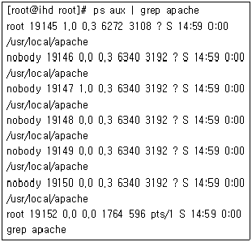
- StartServers 5
- StartServers 6
- MaxClients 5
- MaxClients 6
(정답률: 25%)
65. Mysql에서 mydb 데이터베이스에 존재하는 friends 테이블을 파일형태로 백업하기 위한 명령으로 가장 알맞은 것은?
- mysqldump mydb friends > backup.sql
- mysql -D mydb friends > backup.sql
- mysqladmin create mydb > backup.sql
- mysqldump friends mydb > backup.sql
(정답률: 24%)
66. 아파치 웹 서버 설정에서 서버가 알지 못하는 MIME 타입의 파일을 사용할 때, 기본적으로 사용할 MIME 타입을 text/plain 으로 지정하기 위한 설정으로 올바른 것은?
- MIMEMagicFile text/plain
- TypesConfig text/plain
- DefaultType text/plain
- AddDefaultMIMEType text/plain
(정답률: 48%)
67. 아래의 아파치 웹 서버 설정에 대한 설명으로 틀린 것은?
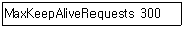
- KeepAlive가 On으로 설정이 되어있을 경우에 적용되는 설정이다.
- 클라이언트와의 연결시간을 줄이기 위해 이 값을 낮출수록 성능은 항상 높아진다.
- 지속적인 접속을 유지하는 동안 허용할 클라이언트의 최대요청횟수는 300회이다.
- 이 설정 값이 0이면 클라이언트가 접속을 끊을때까지 연결상태를 계속 유지한다.
(정답률: 17%)
68. 아파치 웹 서버 환경설정 파일에서 서버 루트 디렉토리의 기본 경로를 지정해 주는 설정은?
- ServerRoot "/usr/local/apache"
- LockFile /usr/local/apache/logs/httpd.lock
- PidFile /usr/local/apache/logs/httpd.pid
- ScoreBoardFile /usr/local/apache/logs/httpd.scoreboard
(정답률: 48%)
69. 다음 그림은 아파치와 PHP를 설치한 후 PHP가 제대로 작동되고 있는지 확인해보기 위해 작성된 페이지로, PHP 설정 옵션 등 여러 가지 정보를 제공해준다. 이와 같은 페이지를 띄워주기 위하여 기본적으로 제공되는 PHP 함수로 알맞은 것은?
- getopt ()
- getenv ()
- syslog ()
- phpinfo ()
(정답률: 42%)
70. 다음 명령의 실행결과로 알 수 있는 ProFTP 설정으로 가장 적절한 것은?
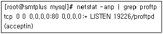
- ServerType inetd
- Port 80
- User tcp
- MaxClients 1
(정답률: 29%)
71. Proftpd 설정파일에서 <Limit ∼> 항목에 설정할 수 있는 명령에 대한 설명으로 틀린 것은?
- RETR : 디렉토리의 이름을 바꾼다.
- STOR : 클라이언트에서 서버로 파일을 전송 한다.
- CWD : 디렉토리를 변경한다.
- DELE : 파일을 삭제한다.
(정답률: 20%)
72. 다음 명령의 실행 결과로부터 알 수 있는 사항으로 가장 적절하지 못한 것은?
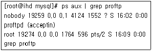
- ProFTP 설정의 ServerType 옵션은 standalone으로 지정되어 있다.
- ProFTP 설정의 User 옵션은 nobody로 지정 되어 있다.
- 현재 이 시스템에 FTP로 접속한 사용자는 아무도 없는 상태이다.
- ProFTP 설정의 MaxClients 옵션은 1로 지정 되어 있다.
(정답률: 22%)
73. 다음 명령문들을 모두 실행하였을 때, ( )안에 들어갈 적절한 파일은?
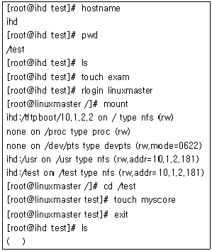
- exam
- exam, myscore
- myscore
- 어떤 파일도 존재하지 않는다.
(정답률: 20%)
74. 다음 명령의 실행결과에 대한 설명으로 틀린 것은?
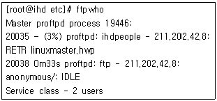
- 시스템에 ProFTP 가 설치, 운영되고 있다.
- 시스템에 존재하는 ProFTP 프로세스는 마스터 프로세스까지 합하여 총 3개가 존재한다.
- ihdpeople 계정은 linuxmaster.hwp 파일을 자신의 로컬 시스템으로부터 FTP를 통해 업로드하고 있다.
- 익명으로 FTP에 접속한 사용자는 한명 존재 하지만, 어떤 파일도 업로드 또는 다운로드하고 있지 않다.
(정답률: 23%)
75. 클라이언트가 삼바서버에 접속할 때 부여하는 인증 레벨에 대한 설명으로 맞는 것은?
- share : 사용자 계정 인증 정보 처리를 윈도우 NT 도메인에서 처리하는 방식이다.
- user : 기본 보안 정책으로 사용자/패스워드를 통해 삼바 서버에 접근하는 모델이다.
- server : 사용자가 요청한 자원을 연결해 주기전에 서버에 로그온하기 위한 사용자/패스워드 인증을 거치지 않는다.
- domain : 기본적으로 user 모드와 동일하나 사용자 계정의 인증 처리를 다른 서버를 통해 처리하는 방식이다.
(정답률: 16%)
76. NFS에 대한 설명으로 틀린 것은?
- 네트워크 파일 공유 시스템 소프트웨어이다.
- 마운트를 통해 NFS 서버의 자원을 사용한다.
- 컴퓨터들 간의 통신 방법으로 RPC(Remote Procedure Call)를 사용한다.
- 강력한 보안 기능을 가지고 있다.
(정답률: 38%)
77. 리눅스 시스템에서 COM4 라는 이름을 가진 윈도우즈 데스크탑 컴퓨터에 아래와 같은 팝업창으로 메시지를 보내고자 할 때 가장 적절한 삼바 명령은?
- smbclient -M com4
- smbmount netbiosname=com4
- smbspool com4
- smbtar -x com4
(정답률: 18%)
78. NetBIOS(Network Basic Input/Output System)에 대한 설명으로 가장 적절하지 못한 것은?
- IBM에 의해 개발되었다.
- NetBIOS는 자체적으로 라우팅 기능을 지원하지 않는다.
- 별개의 컴퓨터상에 있는 애플리케이션들이 근거리 통신망 내에서 서로 통신할 수 있게 해주는 프로그램이다.
- OSI 모델에 기술되어 있는 응용 계층의 서비스를 제공한다.
(정답률: 12%)
79. 다음 중 전자 메일 서비스를 위한 콤포넌트가 아닌 것은?
- 메일 사용자 에이전트
- 메일 전송 에이전트
- 메일 백업 에이전트
- 메일 전달 에이전트
(정답률: 63%)
80. 192.168.0.1 이라는 서버에서 발송하는 메일을 받아 무조건 폐기하기 위해 /etc/mail/access 설정 파일에 추가해야 할 내용으로 알맞은 것은?
- 192.168.0.1 REJECT
- 1.0.168.192 RELAY
- 1.0.168.192 REJECT
- 192.168.0.1 DISCARD
(정답률: 10%)
81. 다음은 스펨메일 서버의 악용을 막기 위한 설정 후, 센드메일 데이터 베이스를 갱신하기 위한 명령이다. ( ) 안에 들어갈 내용이 순서대로 알맞은 것은?
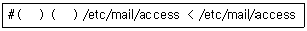
- makemap, hash
- sort, spam
- check, spam
- file, attrib
(정답률: 38%)
82. 메일 관련 용어와 프로그램이 잘못 짝지어진 것은?
- MUA : K메일
- MDA : 아웃룩
- SMTP : 센드메일
- MTA : 큐메일
(정답률: 22%)
83. 센드메일의 환경 설정 후, 테스트를 위하여 주소 테스트 모드(Address Test Mode)로 동작시키기 위한 명령으로 알맞은 것은?
- service sendmail restart
- /usr/lib/sendmail -te
- service sendmail -at
- /usr/lib/sendmail -bt
(정답률: 10%)
84. Sendmail에서 수신된 메일의 최종수신지를 설정하는 파일은 무엇인가?
- relay-domains
- local-host-names
- domaintable
- virtusertable
(정답률: 27%)
85. 시스템 관리자 홍길동은 사내 센드메일 메일 서버에 관리자만 telnet으로 접속하여 설정할 수 있도록 하고, 일반 사용자는 메일 클라이언트로 전자우편 주고받기만 가능하게 하려고 한다. 이를 위해 취해야 할 조치로 가장 알맞은 것은?
- /etc/passwd 파일 안에 일반 사용자들의 쉘을 /dev/null로 변경한다.
- Sendmail의 access에 접근 불가능한 사용자를 설정한다.
- /etc/user에 센드메일 사용자를 등록한다.
- IP Filter를 적용하여 일반 사용자가 80 UDP 포트로 접근하지 못하도록 설정한다.
(정답률: 38%)
86. 다음 중 전자우편 내용의 보안 시스템이 아닌 것은?
- PGP
- PEM
- S/MIME
- SSL
(정답률: 32%)
87. 다음중 센드메일 환경설정 파일인 sendmail.cf에 포함된 각 섹션에 대한 설명으로 알맞은 것은?
- Local Info 섹션 : 발신인 주소를 변경할 때 사용된다.
- Option 섹션 : 센드메일이 메일 프로그램을 시작할 때 사용하는 명령을 정의한다.
- Message Precedences 섹션 : 메시지 우선 순위를 할당 시 사용된다.
- Mailer Definitions 섹션 : 해당 로컬 호스트의 구성 정보를 정의한다.
(정답률: 43%)
88. 다음은 사내의 클라이언트들에게 192.168.0.1부터 192.168.0.10까지 IP 주소를 동적으로 할당하기 위한 DHCP 서버의 설정이다. ( ) 안에 알맞은 설정은?
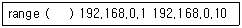
- subnet
- autodetecting-type
- domain
- dynamic-bootp
(정답률: 43%)
89. 다음은 DNS 서버에서 리눅스.kr 이란 한글 형태의 도메인 네임 서비스를 제공하기 위한 named.conf 파일의 일부분이다. ( ) 안에 알맞은 내용은?
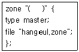
- 리눅스.kr을 Punycode로 변경하여 입력
- 리눅스.kr을 ASCII 코드로 변경하여 입력
- 리눅스.kr을 16진수로 변경하여 입력
- 리눅스.kr
(정답률: 13%)
90. 네임서버의 데이터베이스에 대한 기본적인 정보를 포함하고 있는 파일로서 설정 파일의 디렉토리, 파일의 위치 등을 지정하는 파일은?
- resolv.conf
- named.conf
- named.ca
- named.local
(정답률: 32%)
91. 아래의 Xinetd 서비스 설정에 대한 설명으로 틀린 것은?
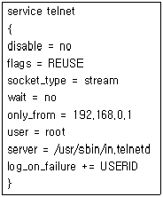
- Telnet 서비스에 대한 설정이다.
- TCP 연결을 이용한다.
- 로그인 실패 시 /etc/xinetd.conf의 기본 설정 이외에 USERID를 추가로 기록한다.
- 192.168.0.1 이외의 모든 IP 주소에서 접속이 가능하다.
(정답률: 57%)
92. 다음 중 DNS 서버의 종류가 아닌 것은?
- Primary
- Secure
- Secondary
- Caching
(정답률: 50%)
93. 다음 중 도메인네임이 작성되는 원칙이 아닌 것은?
- 언더바(_), 콤마(,)등의 기호를 사용할 수 없다.
- 영어나 숫자로 시작할 수 있다.
- 전세계적으로 중복되지 않는 고유한 주소로 사용된다.
- 영어의 대․소문자를 다르게 취급한다.
(정답률: 36%)
94. 시스템 관리자 홍길동은 도메인 네임 서버를 운영하기 위해 named 패키지를 설치하였다. 그러나 해당 서버에 이미 설치된 방화벽 때문에 외부에서 네임 서비스를 사용할 수 없었다. 이와 같은 문제를 해결하기 위해 가장 적절한 방법은?
- named 데몬의 /etc/access 설정 파일에 접근 가능한 사용자 ID를 추가한다.
- 프락시 서버를 설정하여 프락시를 통해 접근 하도록 한다.
- 서버에서 53번 TCP/UDP 포트를 통해 접근 가능 하도록 설정한다.
- named 데몬을 inetd 모드로 변경하여 다시 시작한다.
(정답률: 39%)
95. 다음중 리눅스에서 제공하는 네트워크 서비스와 프로그램으로 바르게 짝지어진 것은?
- 도메인 네임 서비스 : ypbind
- 파일 버전 관리 서비스 : CVS
- 프락시 서버 : iptable
- 네트워크 정보 서비스 : bind
(정답률: 46%)
96. 시스템이나 네트워크는 한정된 자원을 갖고 있다. 이러한 자원을 많은 양의 데이터로 채워 자원의 여분을 고갈시켜서 서버가 정상적인 동작을 할 수 없도록 하는 해킹 유형은?
- 트로이목마
- IP 스푸핑
- 서비스거부 공격
- 백도어
(정답률: 43%)
97. Sobig worm이 운영중인 시스템의 webmaster 계정으로 침투중인 경우 해당 바이러스를 차단하기 위해 설정해야할 파일은 다음 중 어떤 것인가?
- /etc/mail/access
- /etc/local-hosts
- /etc/hosts
- /etc/passwd
(정답률: 34%)
98. 리눅스에서 Application-Level Proxy를 지원하는 패키지로 올바르게 묶인 것을 고르시오.
- Apache - Squid
- Squid - Exchange
- Ipchains - Apache
- Ipchains - Squid
(정답률: 14%)
99. 단순한 접근 제어 기능을 넘어서 침입의 패턴 데이터베이스와 Expert 시스템을 사용해 네트워크나 시스템의 사용을 실시간으로 모니터링하는 보안 시스템은?
- 방화벽(Firewall)
- 침입탐지시스템(IDS)
- VPN(Virtual Private Network)
- DMZ(De-Militarized Zone)
(정답률: 46%)
100. 리눅스에서 iptable 명령을 이용하여, 10.10.10.3으로부터 오는 모든 패킷을 막기 위한 명령으로 알맞은 것은?
- /sbin/iptables -A INPUT -s 10.10.10.3 -j DROP
- /sbin/iptables -A INPUT -s 10.10.10.3 -J DROP
- /sbin/iptables -A FORWARD -s 10.10.10.3 -j DROP
- /sbin/iptables -A FORWARD -s 10.10.10.3 -J DROP
(정답률: 34%)
레지스터는 CPU 내부에 위치하며 가장 빠른 속도로 데이터를 처리할 수 있다. 메인 메모리는 CPU와 가까운 위치에 있어서 레지스터에 비해는 느리지만, 대부분의 프로그램이 실행되는 곳으로서 빠른 속도를 보인다. 광학 디스크는 레이저를 이용하여 데이터를 읽고 쓰는데, 회전하는 디스크를 이용하기 때문에 자기 디스크보다는 느리지만, 대용량의 데이터를 저장할 수 있다. 자기 테이프는 자기장을 이용하여 데이터를 저장하는데, 저장 및 검색 속도가 매우 느리지만, 대용량의 데이터를 저장할 수 있어서 백업용으로 사용된다.
따라서, 속도가 빠른 순서대로 나열하면 레지스터 - 메인 메모리 - 광학 디스크 - 자기 테이프가 된다.